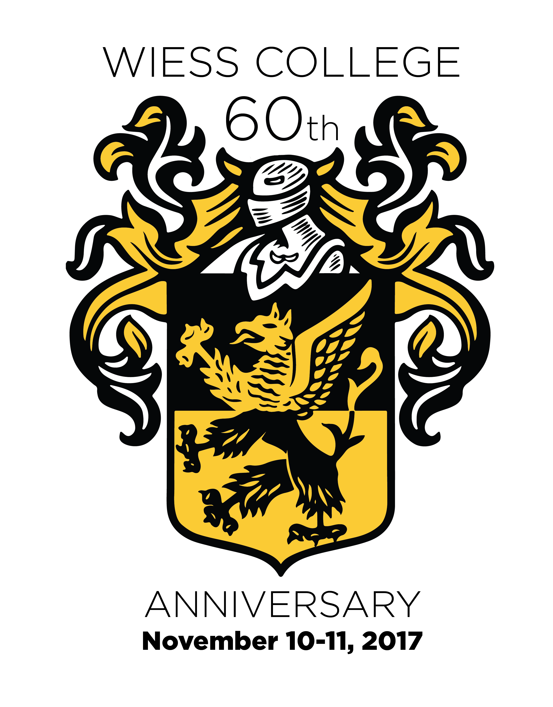
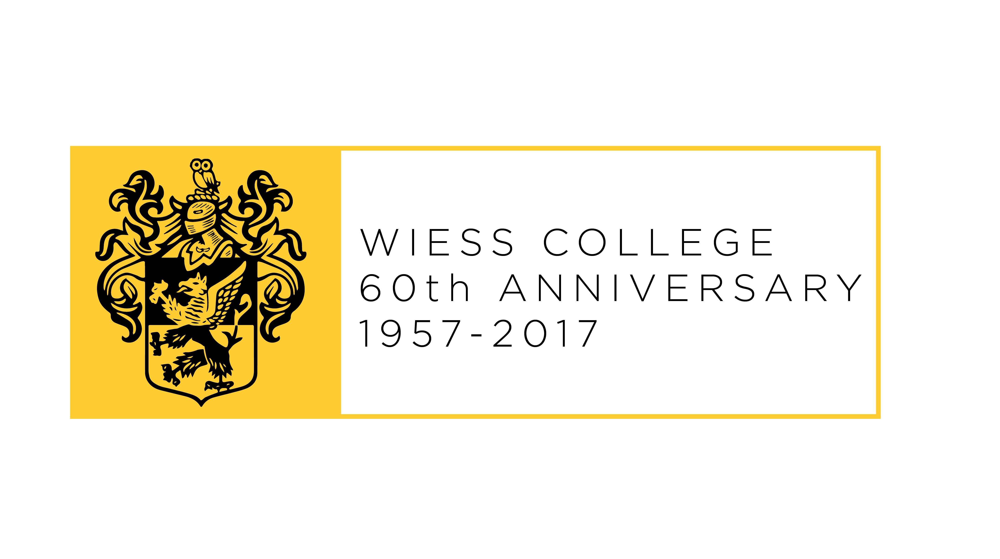

<div class="panel">
    <div class="panel-body">
      <br>
      <p style="text-align: center">
        The Masters, Associates, Students and Alumni of
        <br>
        Wiess College
        </br>
        invite you to SAVE THE DATE for the <br></p>
        <h2 style="text-align: center">Wiess College 60th Anniversary Celebration</h2>
        <center>
        
      </center>
        <p style="text-align: center">
The year 2017 marks the 60th anniversary of the founding of Wiess College as one of the four original residential colleges at Rice.
<br>
Six decades and one building later, Wiess is still the best.
<br>
Make plans to join us at Homecoming Weekend 2017 to celebrate the past, present and future of Rice’s most envied and spirited college.
</p>
        </br>
        <div class="well" style="text-align: center;">
          <div id="countdown-clock" style="display: inline-block; width: auto;">
          </div>
          <script type="text/javascript">
          var party_time = 1510308000;
          var clock = $('#countdown-clock').FlipClock(party_time - Math.floor(Date.now()/1000), {
            clockFace: 'DailyCounter',
            countdown: true
            });
          </script>
        </div>
        <div class="well">
            <center style="font-size:13pt;">
              <h2>Preliminary Schedule of Events</h2>
              <hr>
              <h3>
              Friday, November 10, 2017
              <br>
              "Team Fun Friday Wiess"
              </h3>
              (A Traditional Wiess TG)
              <br>
              <u>4:00 - 7:00 pm*</u>
              <br>
              The Acabowl
              <br>
              <h3>
              Hello, Hamlet! Sing-Along/Drink-Along
              </h3>
              <u>8:00 pm*</u>
              <br>
              Wiess Commons
              <hr>
              <h3>
              Saturday, November 11, 2017
              <br>
              Wiess 60th Anniversary Gala
              </h3>
              benefiting the Wiess College President's Endowment
              <br>
              <u>7:00 pm*</u>
              <br>
              Wiess Commons
            </center>
        </div>
        <div>
          <center><p style="font-size:12pt;">
            * Event times subject to change as Homecoming schedule is finalized.
            <br>
            Full details and registration links
             will be provided shortly.  Please use the link below to make sure
              you receive timely updates from Wiess!</p></center>
        </div>
        <div class="well">
            <center style="font-size:13pt;">
              <u><h2>MAKE SURE YOU GET YOUR OFFICIAL INVITATION</h2></u>

              <p>
              Please click <u><a href="https://goo.gl/forms/LPJQWxfHDVPBhpO53">here</a></u>
               so we can send you a complete invitation, RSVP link and further updates
               as soon as they are available.
             </p>
            </center>
          </div>
          <div>
              <center></center>
          </div>
          <br>
          <div class="well">
            <center style="font-size:13pt;">
              <h2>Wiess 60th Anniversary Committee</h2>
              George Pharr ’75
              <br>
              Terry “H.R.” Phillips ’83
              <br>
              George Webb ’88, ’91
              <br>
              Doward Hudlow ’01
              <br>
              Christie Hudlow ’01
              <br>
              Lisa Hopkins '06
              <br>
              Frank Arnold ’08
              <br>
              Michelle Kerner Arnold ’08
              <br>
              Margaret Roddy ’18
              <br>
              Serena Tohme ’19
              <br>
              Liz Kacpura '20
              <br>
              Andrew Schaefer ’94 and Laura Atkinson Schaefer ’95, Masters
              <hr>
              <p style="font-size:12pt;">The Committee needs additional volunteers to
                 champion this event among Wiess alumni.  If you can help,
                  please contact the committee at wiesscollege60@gmail.com</p>
            </center>
        </div>
        <!-- <div class="well">
          <div style="width:100%; text-align:left;" ><iframe  src="https://www.eventbrite.com/e/wiess-college-60th-anniversary-celebration-tickets-31472872208?ref=eweb" frameborder="0" height="1200" width="100%" vspace="0" hspace="0" marginheight="5" marginwidth="5" scrolling="no" allowtransparency="true"></iframe><div style="font-family:Helvetica, Arial; font-size:12px; padding:10px 0 5px; margin:2px; width:100%; text-align:left;" ><a class="powered-by-eb" style="color: #ADB0B6; text-decoration: none;" target="_blank" href="http://www.eventbrite.com/">Powered by Eventbrite</a></div></div>
        </div> -->
        <div class="well">
            <center style="font-size:12pt;">
              <h2>Send Us Your Wiess Stories and Pictures</h2>
              <i>We are collecting photos, video and stories for the Anniversary Gala.
                Please submit your photos and videos of Wiess history to <a href="mailto:wiessphotos@gmail.com">wiessphotos@gmail.com</a></i>
              <iframe src="https://docs.google.com/forms/d/e/1FAIpQLSejNcH18NCENeUsFWKUYQuILDlhC1SzZpwHalSz8HizVYdHFg/viewform?embedded=true" style="margin-top: 15px;" width="100%" height="600" scrolling="no" frameborder="0" marginheight="0" marginwidth="0">Loading...</iframe>
            </center>
        </div>
        <div class="well">
            <center style="font-size:12pt;">
              <h2>Recommended Hotels</h2>
              <hr>
              <h2>Wiess Merchandise</h2>
              <hr>
              <h2>Other Info</h2>
              <hr>
              <p>
                Additional info will be added to this page as it develops.
                Please use the <u><a href="https://goo.gl/forms/LPJQWxfHDVPBhpO53">link above</a></u>
                 to make sure you receive
                timely updates from Wiess!
              </p>
            </center>
        </div>
        <div>
            <center style="font-size:16pt;">
              
            </center>
        </div>
    </div>
</div>
